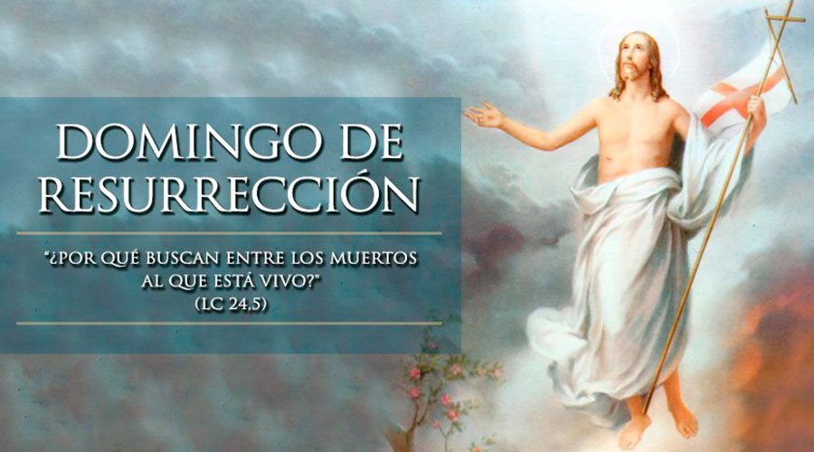

Celebracion de semana Santa
¿En que consiste la semana santa?
La Semana Santa es el momento litúrgico más intenso de todo el año. Sin embargo, para muchos católicos se ha convertido sólo en una ocasión de descanso y diversión. Se olvidan de lo esencial: esta semana la debemos dedicar a la oración y la reflexión en los misterios de la Pasión y Muerte de Jesús para aprovechar todas las gracias que esto nos trae.
Para vivir la Semana Santa, debemos darle a Dios el primer lugar y participar en toda la riqueza de las celebraciones propias de este tiempo litúrgico.Vivir la Semana Santa es acompañar a Jesús con nuestra oración.Lo importante de este tiempo no es el recordar con tristeza lo que Cristo padeció, sino entender por qué murió y resucitó. Es celebrar y revivir su entrega a la muerte por amor a nosotros y el poder de su Resurrección, que es primicia de la nuestra.
Días de la celebracion
Jueves Santo
 Este día recordamos la Última Cena de Jesús con sus apóstoles en la que les lavó los pies dándonos un ejemplo de servicialidad. En la Última Cena, Jesús se quedó con nosotros en el pan y en el vino, nos dejó su cuerpo y su sangre. Es el jueves santo cuando instituyó la Eucaristía y el Sacerdocio. Al terminar la última cena, Jesús se fue a orar, al Huerto de los Olivos. Ahí pasó toda la noche y después de mucho tiempo de oración, llegaron a aprehenderlo.
Este día recordamos la Última Cena de Jesús con sus apóstoles en la que les lavó los pies dándonos un ejemplo de servicialidad. En la Última Cena, Jesús se quedó con nosotros en el pan y en el vino, nos dejó su cuerpo y su sangre. Es el jueves santo cuando instituyó la Eucaristía y el Sacerdocio. Al terminar la última cena, Jesús se fue a orar, al Huerto de los Olivos. Ahí pasó toda la noche y después de mucho tiempo de oración, llegaron a aprehenderlo.
La liturgia del Jueves Santo es una invitación a profundizar concretamente en el misterio de la Pasión de Cristo, ya que quien desee seguirle tiene que sentarse a su mesa y, con máximo recogimiento, ser espectador de todo lo que aconteció 'en la noche en que iban a entregarlo'. Y por otro lado, el mismo Señor Jesús nos da un testimonio idóneo de la vocación al servicio del mundo y de la Iglesia que tenemos todos los fieles cuando decide lavarle los pies a sus discípulos.
En este sentido, el Evangelio de San Juan presenta a Jesús 'sabiendo que el Padre había puesto todo en sus manos, que venía de Dios y a Dios volvía' pero que, ante cada hombre, siente tal amor que, igual que hizo con sus discípulos, se arrodilla y le lava los pies, como gesto inquietante de una acogida incansable.
 Viernes Santo
Viernes Santo
Ese día recordamos la Pasión de Nuestro Señor: Su prisión, los interrogatorios de Herodes y Pilato; la flagelación, la coronación de espinas y la crucifixión. Lo conmemoramos con un Via Crucis solemne y con la ceremonia de la Adoración de la Cruz.
La tarde del Viernes Santo presenta el drama inmenso de la muerte de Cristo en el Calvario. La cruz erguida sobre el mundo sigue en pie como signo de salvación y de esperanza.
Con la Pasión de Jesús según el Evangelio de Juan contemplamos el misterio del Crucificado, con el corazón del discípulo Amado, de la Madre, del soldado que le traspasó el costado.
Y los títulos de Jesús componen una hermosa Cristología. Jesús es Rey. Lo dice el título de la cruz, y el patíbulo es trono desde donde el reina. Es sacerdote y templo a la vez, con la túnica inconsútil que los soldados echan a suertes.
Sábado de Gloria
 Se recuerda el día que pasó entre la muerte y la Resurrección de Jesús. Es un día de luto y tristeza pues no tenemos a Jesús entre nosotros. Las imágenes se cubren y los sagrarios están abiertos. Por la noche se lleva a cabo una vigilia pascual para celebrar la Resurrección de Jesús. Vigilia quiere decir “ la tarde y noche anteriores a una fiesta.”. En esta celebración se acostumbra bendecir el agua y encender las velas en señal de la Resurrección de Cristo, la gran fiesta de los católicos.
Se recuerda el día que pasó entre la muerte y la Resurrección de Jesús. Es un día de luto y tristeza pues no tenemos a Jesús entre nosotros. Las imágenes se cubren y los sagrarios están abiertos. Por la noche se lleva a cabo una vigilia pascual para celebrar la Resurrección de Jesús. Vigilia quiere decir “ la tarde y noche anteriores a una fiesta.”. En esta celebración se acostumbra bendecir el agua y encender las velas en señal de la Resurrección de Cristo, la gran fiesta de los católicos.
Durante elSábado de Gloria (o sábado santo) la Iglesia permanece junto al sepulcro del Señor, meditando su pasión y su muerte, su descenso a los infiernos y esperando en oración y ayuno su resurrección.
Es el día del silencio: la comunidad cristiana vela junto al sepulcro. Callan las campanas y los instrumentos. Se ensaya el aleluya, pero en voz baja. Es día para profundizar. Para contemplar. El altar está despojado. El sagrario, abierto y vacío.
La Cruz sigue entronizada desde ayer. Central, iluminada, con un paño rojo, con un laurel de victoria. Dios ha muerto. Ha querido vencer con su propio dolor el mal de la humanidad.
Domingo de Resurreción
Es el día más importante y más alegre para todos nosotros, los católicos, ya que Jesús venció a la muerte y nos dio la vida. Esto quiere decir que Cristo nos da la oportunidad de salvarnos, de entrar al Cielo y vivir siempre felices en compañía de Dios. Pascua es el paso de la muerte a la vida.
El Domingo de Resurrección o Vigilia Pascual es el día en que incluso la iglesia más pobre se reviste de sus mejores ornamentos, es la cima del año litúrgico. Es el aniversario del triunfo de Cristo. Es la feliz conclusión del drama de la Pasión y la alegría inmensa que sigue al dolor. Y un dolor y gozo que se funden pues se refieren en la historia al acontecimiento más importante de la humanidad: la redención y liberación del pecado de la humanidad por el Hijo de Dios.
Nos dice San Pablo: "Aquel que ha resucitado a Jesucristo devolverá asimismo la vida a nuestros cuerpos mortales". No se puede comprender ni explicar la grandeza de las Pascuas cristianas sin evocar la Pascua Judia, que Israel festejaba, y que los judíos festejan todavía, como lo festejaron los hebreos hace tres mil años, la víspera de su partida de Egipto, por orden de Moisés.
¿Cómo lo celebran otras religiones?
Cristianos
Para los miembros de la iglesia cristiana evangélica, la Semana Santa es el tiempo para recordar la muerte de Cristo. Para conmemorarla, se congregan en una jornada de oración y adoración, la cual inicia el Jueves Santo a las 9:00 de la noche y se extiende por 24 horas. En esta reunión se dan cita grupos artísticos y musicales, ya que los cristianos creen que “Dios habita en medio de la alabanza”. Además, para ellos es fundamental la vigilia, es decir, pasar una noche en vela y adorando a Dios. Con panderos, música y cantos, recuerdan la muerte de Jesucristo. La jornada de adoración comienza el jueves en la noche y termina el viernes. En estas 24 horas, la comunidad cristiana ora por los enfermos y por las necesidades de cada una de las personas que habitan en este mundo.
Frente a la resurrección de Jesucristo, los cristianos manifiestan que este hecho aún no ha sido confirmado; sin embargo, el domingo, día en que los católicos celebran la resurrección, ellos llevan a cabo una reunión de exaltación. En cuanto a la comida y la vestimenta, esta comunidad no tiene restricción a la hora de ingerir carnes rojas, ni de lucir determinados atuendos.
Nelson González, pastor de la Iglesia Cristiana Filadelfia, señala que esta doctrina comparte las mismas creencias que La Asamblea de Dios, Cuadrangular, Presbiteriana, Casa Sobre la Roca, entre otras congregaciones.
En lo que respecta a la Semana Santa, indica que conmemoran la muerte del Señor Jesucristo a través de la reflexión individual, para tal fin los días jueves, viernes y domingo tienen encuentros personales.
Testigos de Jehová
Es el día más importante y más alegre para todos nosotros, los católicos, ya que Jesús venció a la muerte y nos dio la vida. Esto quiere decir que Cristo nos da la oportunidad de salvarnos, de entrar al Cielo y vivir siempre felices en compañía de Dios. Pascua es el paso de la muerte a la vida. Los Testigos de Jehová consideran que la Semana Mayor es una fecha común; ellos celebran anualmente la muerte de Jesús, pero lo hacen según el calendario arameo. En dicha reunión comparten vino y pan, tal como lo hizo el Señor en la última cena.
“Nosotros celebramos la muerte de Jesús con una cena, cada año la fecha puede variar dependiendo del calendario arameo.
“Durante la Semana Santa que llaman los católicos, los Testigos de Jehová comemos normalmente, ya que consideramos que esos son días común y corriente. A parte de ellos no creemos en santos ni imágenes”, comentó una feligrés Testigo de Jehová.
-
Semana Santa en mi comunidad
Descubre como se celebra semana santa en Atlixco
-
Semana Santa en Tlaxcala
Descubre como se celebra semana santa en Tlaxcala
-
Semana Santa en Iztapalapa
Descubre como se celebra semana santa en Iztapalapa
-
Semana Santa en Oaxaca
Descubre como se celebra semana santa en Oaxaca
 La conmemoración de Semana Santa en el municipio de Atlixco destaca principalmente por 2 eventos: el recorrido de los engrillados y la procesión del silencio; ambos logran atraer a miles de visitantes año tras año debido a que son actividades únicas en su tipo.
La conmemoración de Semana Santa en el municipio de Atlixco destaca principalmente por 2 eventos: el recorrido de los engrillados y la procesión del silencio; ambos logran atraer a miles de visitantes año tras año debido a que son actividades únicas en su tipo. Una de las tradiciones más arraigadas en la memoria histórica de Tlaxcala, es la celebración de la Semana Santa o Semana Mayor, que fue adoptada desde la llegada de los españoles en 1519, ellos trajeron la religión católica.
Una de las tradiciones más arraigadas en la memoria histórica de Tlaxcala, es la celebración de la Semana Santa o Semana Mayor, que fue adoptada desde la llegada de los españoles en 1519, ellos trajeron la religión católica. La Procesión del Silencio lleva un orden programado: primero la cruz y los ciriales que preceden a toda procesión; después los estandartes bordados en plata o en oro, portando Relicarios con antigüedad que los convierte en piezas de museo, siguiendo las damas de la Tercera Orden de Santo Domingo, acompañando al Señor de la Columna, hermosísima talla del siglo XVII que se venera precisamente en este Templo.
La Procesión del Silencio lleva un orden programado: primero la cruz y los ciriales que preceden a toda procesión; después los estandartes bordados en plata o en oro, portando Relicarios con antigüedad que los convierte en piezas de museo, siguiendo las damas de la Tercera Orden de Santo Domingo, acompañando al Señor de la Columna, hermosísima talla del siglo XVII que se venera precisamente en este Templo.